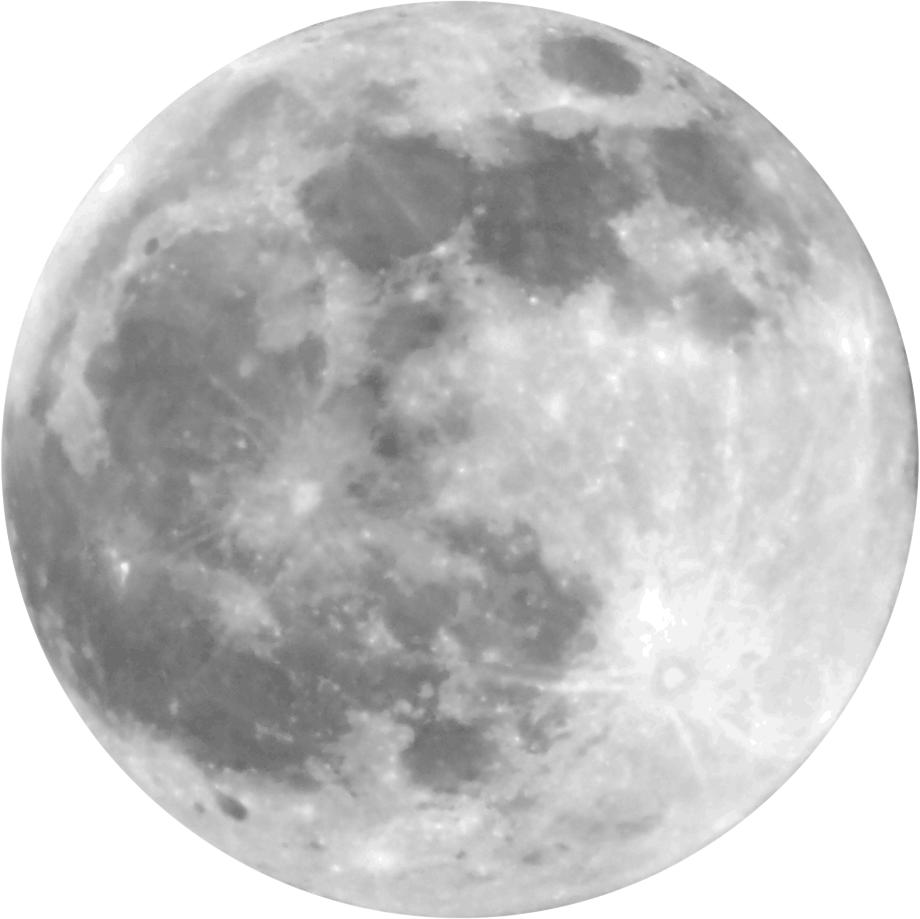

The Moon
By Percy Bysshe Shelley

AND, like a dying lady lean and pale,
Who totters forth, wrapp'd in a gauzy veil,
Out of her chamber, led by the insane
And feeble wanderings of her fading brain,
The mood arose up in the murky east,
A white and shapeless mass.
Art thou pale for weariness
Of climbing heaven and gazing on the earth,
Wandering companionless
Among the stars that have a different birth,
And ever changing, like a joyless eye
That finds no object worth its constancy?